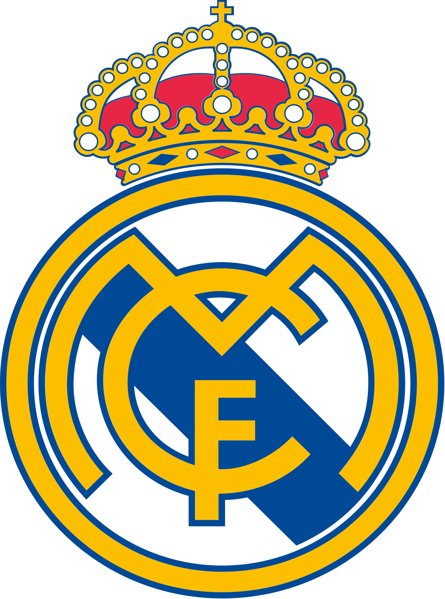

| Club |
History |
Logo |
| Manchester United
| Manchester United Football Club, commonly referred to as Man United, or simply United, is a professional football club based in the Old Trafford area of Manchester, England.
| 
|
| Juventes FC
| Juventus Football Club, colloquially known as Juve, is a professional football club based in Turin, Piedmont, Italy, that competes in the Serie A, the top tier of the Italian football league system.
| 
|
| Real Madrid
| Real Madrid Club de Fútbol, commonly referred to as Real Madrid or simply Real, is a Spanish professional football club based in Madrid. Founded in 1902 as Madrid Football Club, the club has traditionally worn a white home kit since its inception.
| 
|